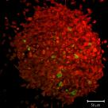
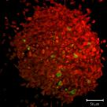

Image Analysis at he Centre for Cell Imaging, a Shared Research Facility at the University of Liverpool
The Liverpool Centre for Cell Imaging (CCI) is a world-class resource for light microscopy based in the Biosciences building at the University of Liverpool. We support our users through the whole research cycle and have expertise in a range of techniques including image analysis. The CCI is hosting regular image analysis courses:
- Fiji Basics
- Fiji Advanced Techniques - under development
- Fiji Macro writing - under development
- Figure preparation for publications - under development
On this site, you can find out more about the courses on offer and our image analyst. Don't forget to get in touch if we can be of assistance.
Courses...
© Marie Held